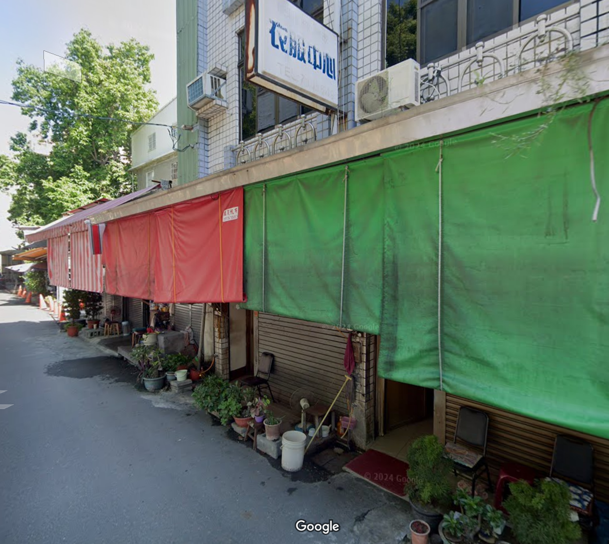
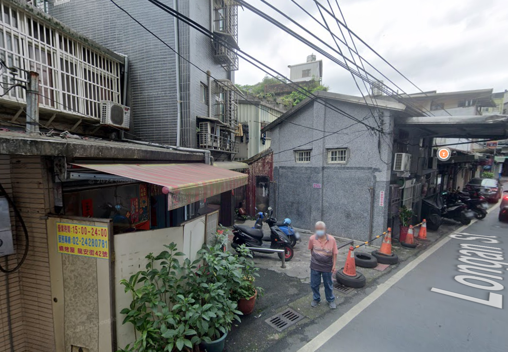
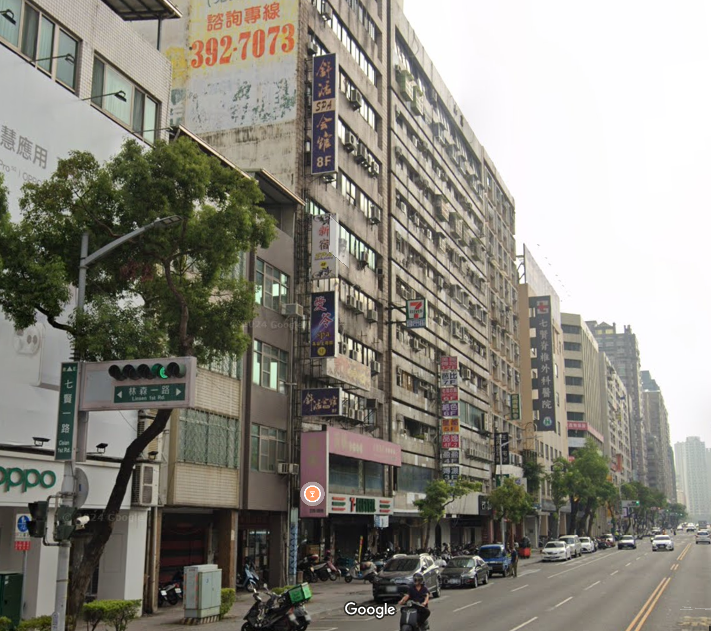
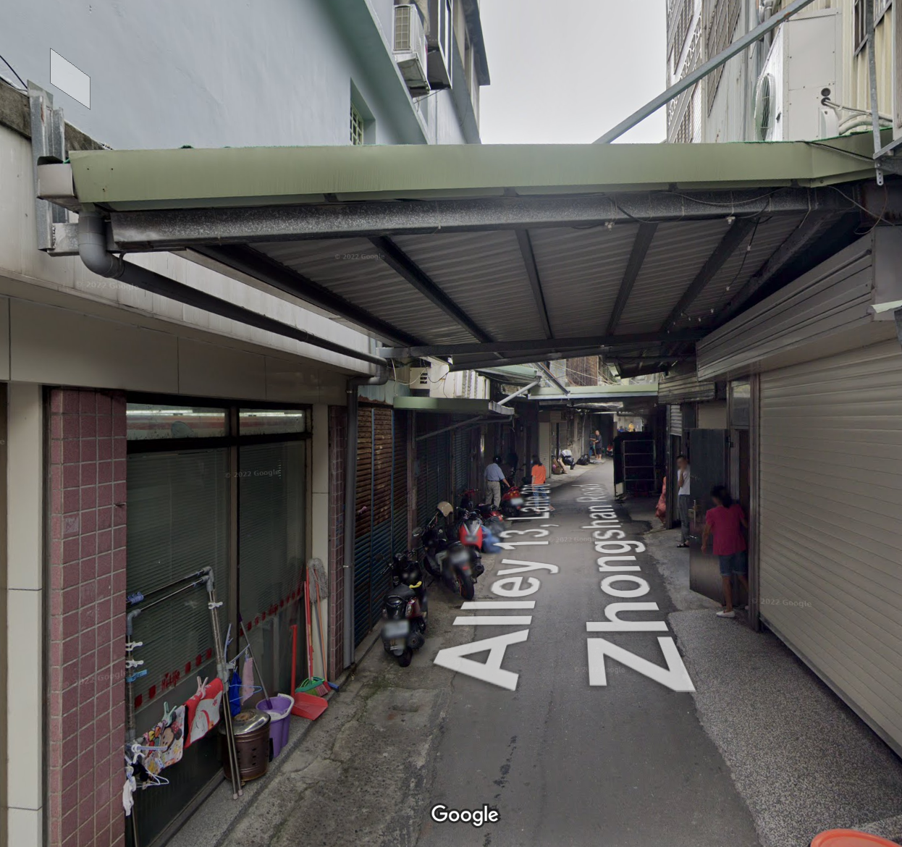
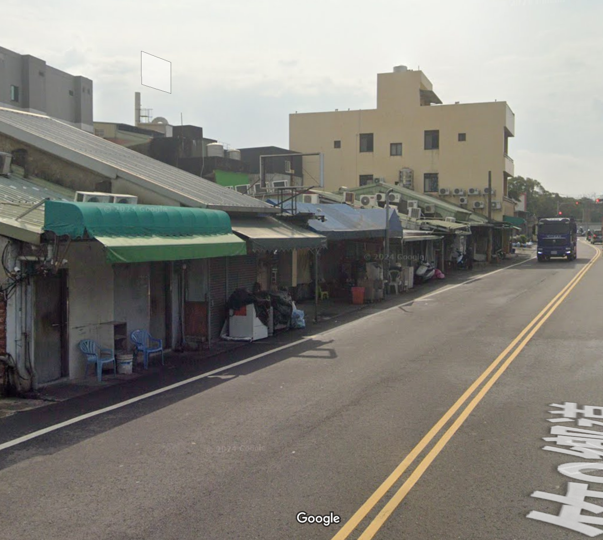

養生館尋訪地圖
專案內容：結合leafmap各式定位功能以及撰寫geocoding，完成全台養生館商家地圖，當中羅列各式資訊
分析與比較
總體增長趨勢
各縣市增減分析
阿公店的分布特徵
專注在空間資訊的研究者 支持專區的成立經過全台的盤點及調查我們可以大致觀察到以下的現象特徵:
公園型
首先是阿公店不知道為甚麼總是出現在公園旁邊，原因可能是公園是人們休閒的場所 ，阿公店提供了社交和放鬆的空間，吸引了許多老年人和工人階層前來聚集
萬華艋舺公園 / 台中公園 / 高雄鳳山

鐵支路型
會群聚在鐵道附近理由可能是，鐵道旁一般人比較不容易行經也較為隱蔽，而且離車站不遠交通便利
雲林虎尾鐵支路 / 基隆龍安路 / 台南新營糖廠

住商大樓
再來則是馬路邊或是騎樓，由於交通方便，且會去這種店的客人許多為工人階層
高雄的電信大樓 / 高雄九如路

傳統豆干厝
最後則是傳統的豆干厝，這類店家通常會在巷弄內，可能會在軍營、暗巷或是鐵皮屋旁，且客人多為熟客， 環境較為簡陋
西勢美豆干厝 / 萬華西園路巷弄的阿公店 / 桃園中壢的三仙巷 / 屏東榮民之家 / 台中豐原/ 屏東西市場

工廠違建型
這類店家通常會在工業區或是工廠附近，可能會在工業區的違建或是工廠的後門，且客人多為工人階層，但根據理論來說此種區位最不適合開設阿公店，因為工業區的治安較差，晚上大家都下班回家，逗留在那裏容易形成治安死角，沒有人可以保證你的安全
桃園中壢的雙連坡 / 新竹榮光路上 / 彰化花壇鄉(已關閉)

結論
這些阿公店的分布特徵顯示出它們與周圍環境的密切關聯，無論是公園、鐵道、住商大樓還是傳統豆干厝，都反映了社區文化和生活方式的多 樣性。這些店家不僅是社交場所，也是地方文化的一部分，承載著歷史和人情味。 但是有幾點必須要多加注意，根據珍雅各的理論其實專區應該設置在越熱鬧的地區，走在路上有路人幫忙監視起到鄰里 守望的作用，以保護顧客的安全，然而這些阿公店大多數都設置在偏僻的巷弄或是工業區，這樣的區位選擇可能會 導致治安問題，尤其是在夜晚時分，缺乏人流和監視可能會增加犯罪風險。對雙方都會造成困擾，顧客可能會因為安全問題而不願意光顧，而店家則可能面臨治安風險和經營困難。
最佳區位
公園旁、鐵道旁、住商大樓旁，這些區位通常交通便利且人流較多，能夠提供顧客方便的進出路線，同時也能夠增加店家的曝光率和吸引力。 這些區位通常位於商業區但不應過於繁忙只要存在部分人流就好，顧客也希望有隱蔽性。
最差區位
工業區、農業區，首先是居民多半無意願，也對生活造成困擾，其次由於地處偏僻對雙方而言無法保障人身安全， 尤其夜間燈光極度昏暗，容易產稱治安問題。